Lore Encyclopedia
Every being, place and power from the stories on the Metaphysical Lore channel, each with the drawn mark and the painting it carries in its video. Search by name or meaning, or pick one story. A name that appears in more than one story is marked in orange.
Dunsany: The Gods of Peganaits dictionary · video
Babylonian: Enuma Elishits dictionary · video
Gnostic: Pistis Sophiaits dictionary · video
Lovecraft: At the Mountains of Madnessits dictionary · video coming
Ethiopian Enoch: The Watchersits dictionary · video coming
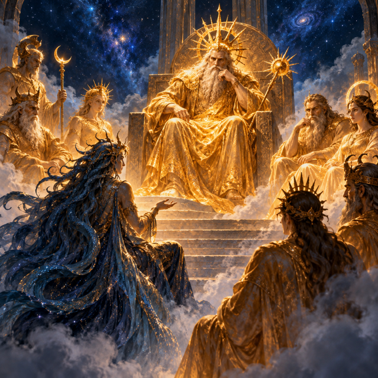
Ansar
beingA god of the second divine generation, father of Anu, who receives news of Tiamat's war and directs the assembly to find and commission a champion.
From Babylonian: Enuma Elish: full entry · watch the video
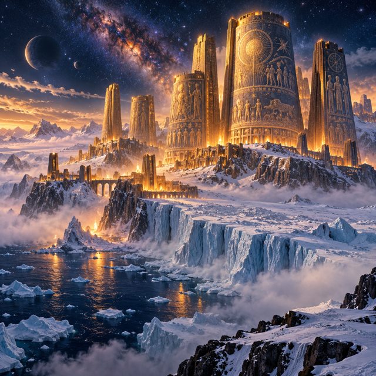
Antarctic land
realmThe dry polar continent where the Old Ones built their greatest city, held the sacred center of their civilization, and made their last surface stand.
From Lovecraft: At the Mountains of Madness: full entry
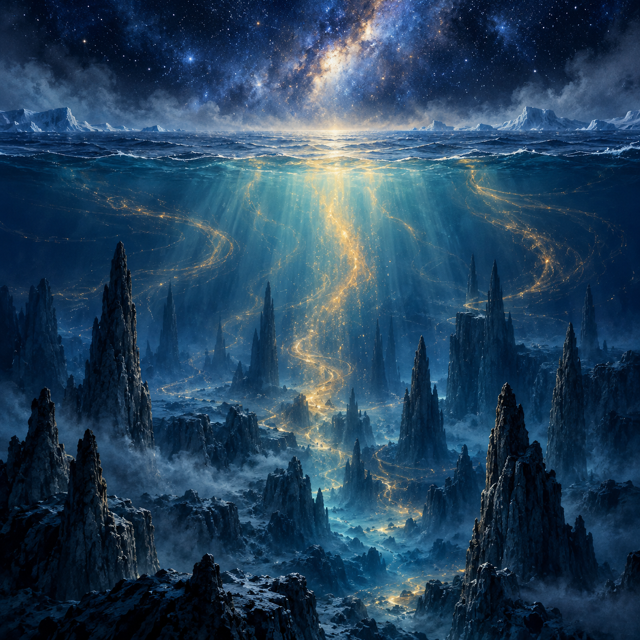
Antarctic Ocean
realmThe southern sea where the Old Ones first arrived on Earth and to which they repeatedly retreated across the whole of their history.
From Lovecraft: At the Mountains of Madness: full entry
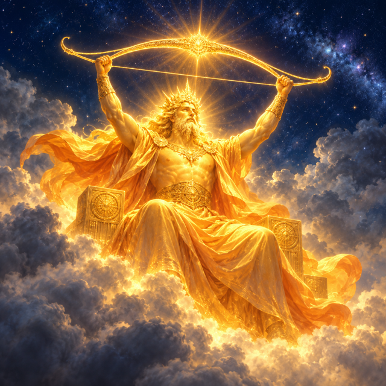
Anu
beingThe sky-god and son of Ansar, whose word in the assembly is matched only by Marduk's, who gives the four winds as a battle gift and raises Marduk's bow to name it a constellation.
From Babylonian: Enuma Elish: full entry · watch the video
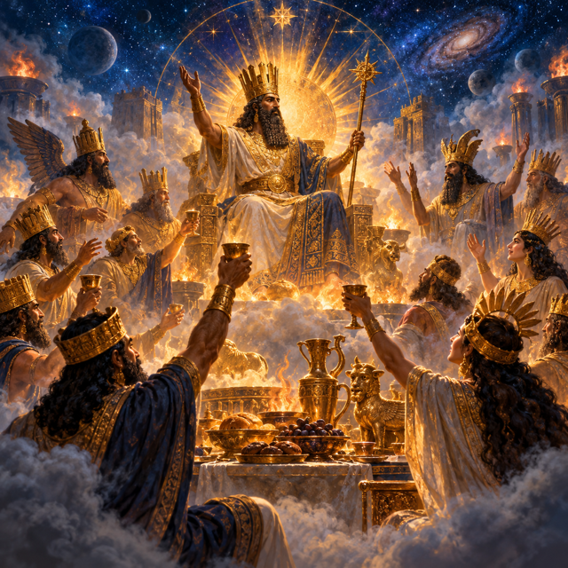
The Anunnaki
beingThe great gods who assemble to feast, decree Marduk's sovereignty in drunken exaltation, and acclaim him king when he proves his word-power.
From Babylonian: Enuma Elish: full entry · watch the video
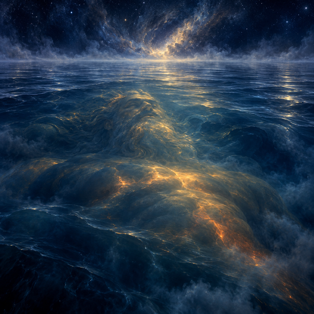
Apsu
beingThe primeval freshwater abyss beneath all things, progenitor of the first gods, who plotted to destroy his noisy divine children and was slain by Ea.
From Babylonian: Enuma Elish: full entry · watch the video
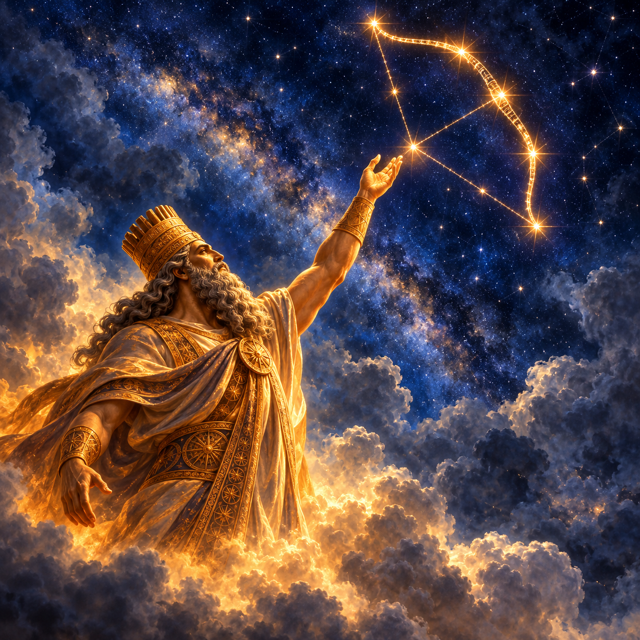
The Bow-star
objectMarduk's battle bow lifted by Anu in the divine assembly, named three names, and set as a fixed constellation in the vault of heaven.
From Babylonian: Enuma Elish: full entry · watch the video

The Bright One
beingThe Bright One made by the gods to seek the reason for the gods, travelling end to end of the worlds and never finding it.
From Dunsany: The Gods of Pegana: full entry · watch the video
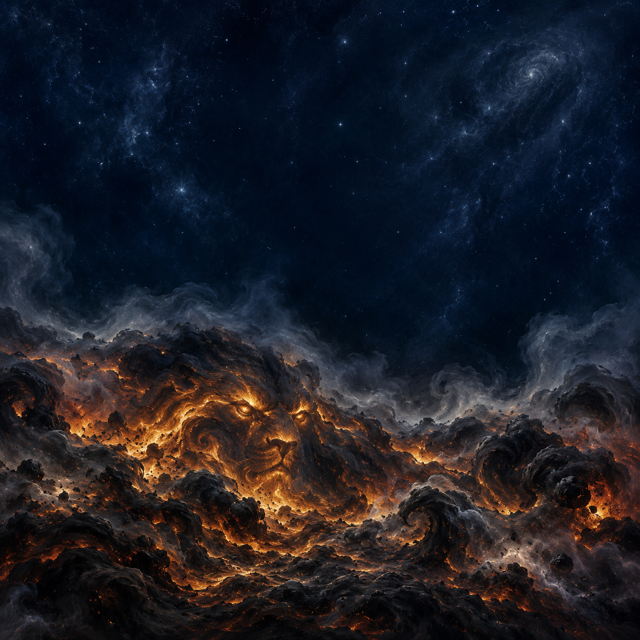
Chaos
realmThe bottomless dark realm below all the æons, a place of raw matter and shadow where Sophia falls and cannot escape.
From Gnostic: Pistis Sophia: full entry · watch the video
Cosmic space
realmThe interstellar void the Old Ones originally crossed to reach Earth, and from which the Cthulhu spawn and Mi-Go later filtered down.
From Lovecraft: At the Mountains of Madness: full entry

Cry of the dying
stateThe voices of men consumed by the Giants, rising with the earth's own accusation through the gates of heaven until they move the Most High to act.
From Ethiopian Enoch: The Watchers: full entry
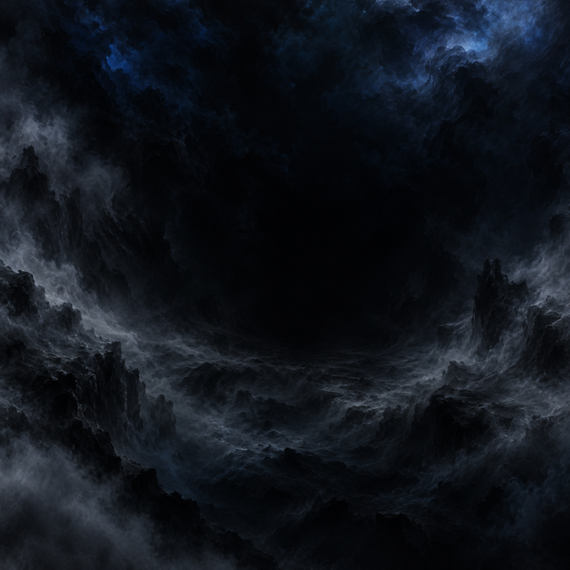
Darkness of the Chaos
stateThe absolute lightless state Sophia is left in after every one of her light-powers is devoured, the dark from which she cries out to the highest light.
From Gnostic: Pistis Sophia: full entry · watch the video

Daughters of men
beingThe beautiful mortal women born to humanity whose loveliness drew the Watchers down from heaven to take them as wives.
From Ethiopian Enoch: The Watchers: full entry
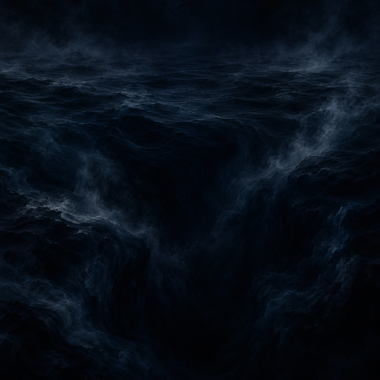
The Deep
realmThe primordial abyss of lower waters beneath all things, the oldest darkness, over which Ea builds his dwelling after Apsu is slain.
From Babylonian: Enuma Elish: full entry · watch the video

The deluge
stateThe great deluge decreed by the Most High to destroy all corruption on the earth, from which only Noah and his seed are warned to hide.
From Ethiopian Enoch: The Watchers: full entry
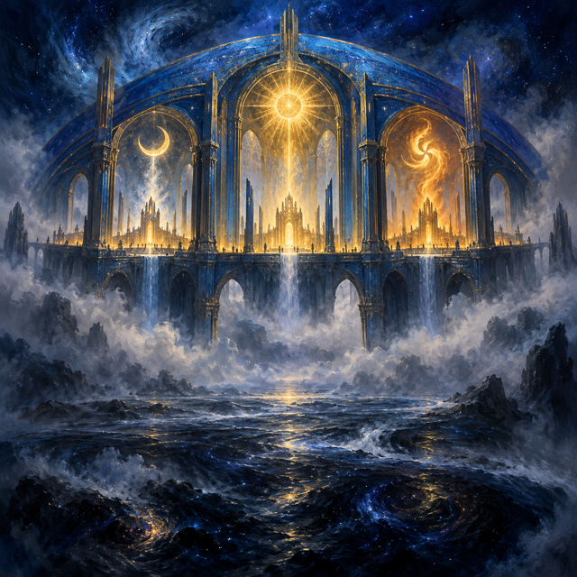
E-sara
realmThe mansion fashioned by Marduk in the likeness of the Deep, set as the structure of heaven, within which Anu, Bel, and Ea are assigned their districts.
From Babylonian: Enuma Elish: full entry · watch the video

The Earth
realmThe mortal world where humanity lives, corrupted by the Watchers' forbidden teachings, which rises in formal accusation before heaven and awaits cleansing.
Also in: Dunsany: The Gods of Pegana
From Ethiopian Enoch: The Watchers: full entry

Earth
realmThe world made last to wonder, covered first with beasts then men, where life and death play out.
Also in: Ethiopian Enoch: The Watchers
From Dunsany: The Gods of Pegana: full entry · watch the video
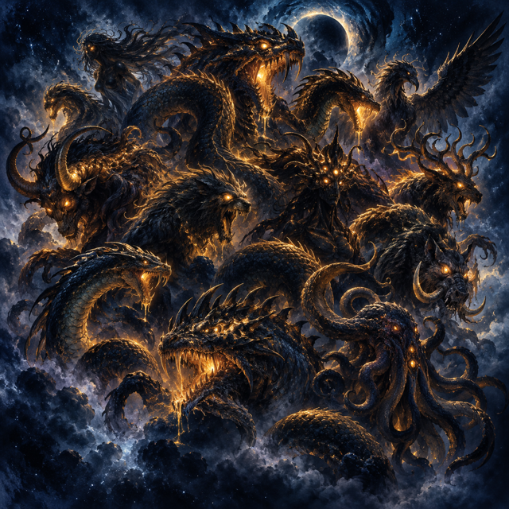
Eleven Monsters
beingThe eleven kinds of creatures spawned by Tiamat as her battle host—serpents, dragons, raging hounds, scorpion-men, fish-men, and rams—filled with poison instead of blood and clothed with terror.
From Babylonian: Enuma Elish: full entry · watch the video
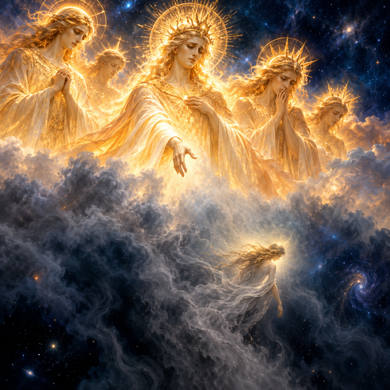
Emanations of Barbēlō
beingThe great divine emanations of the highest world associated with Barbēlō, from whom Sophia becomes a stranger through her fall.
From Gnostic: Pistis Sophia: full entry · watch the video
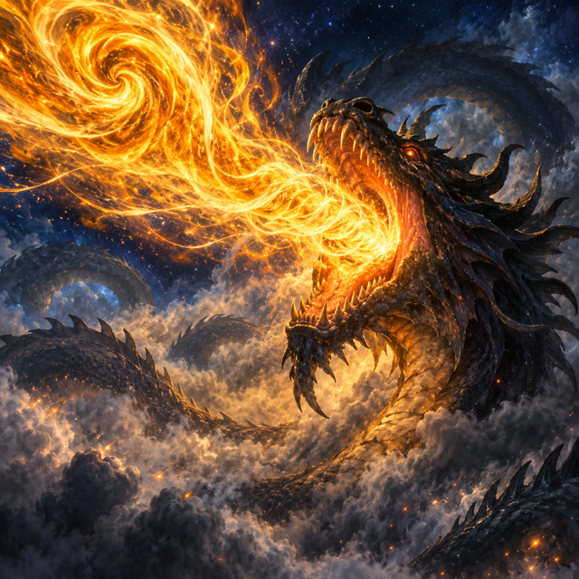
The Evil Wind
powerThe weapon-wind created by Marduk and driven into Tiamat's open mouth before she can close it, filling her belly and robbing her of courage for the killing blow.
From Babylonian: Enuma Elish: full entry · watch the video
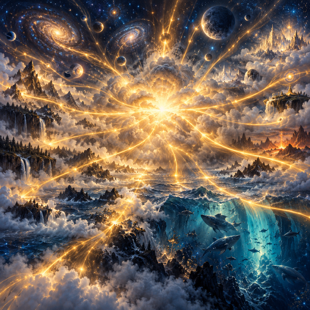
First Mystery
powerThe supreme commanding authority whose orders set the whole story in motion, directing both Sophia's gaze upward and Self-willed's pursuit.
From Gnostic: Pistis Sophia: full entry · watch the video
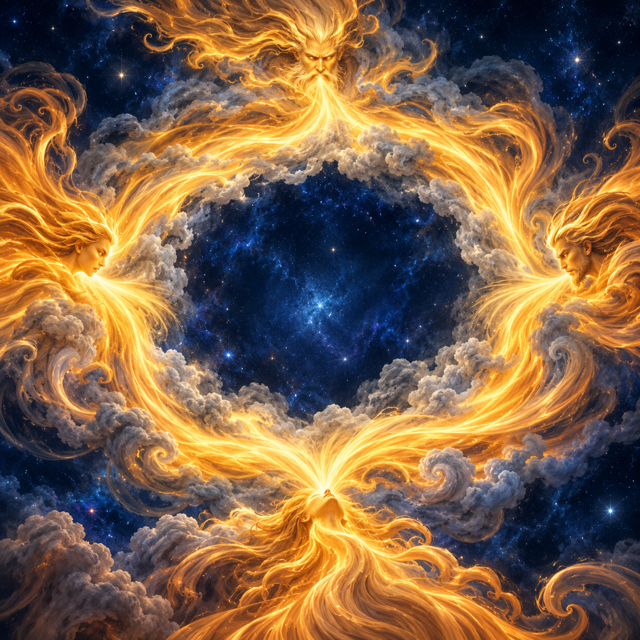
The Four Winds
powerThe four cardinal winds—South, North, East, and West—given by Anu to Marduk as a battle gift and stationed around Tiamat's net so that nothing might escape.
From Babylonian: Enuma Elish: full entry · watch the video
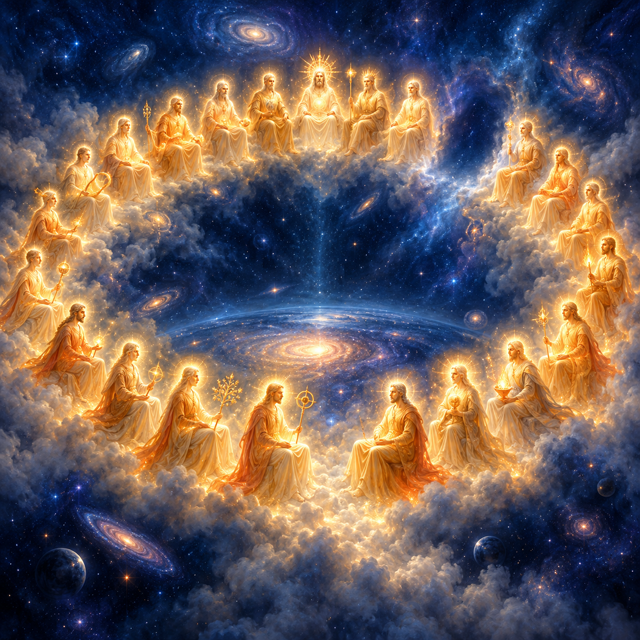
Four-and-Twenty Emanations
beingSophia's twenty-four divine companions in the thirteenth æon, fellow emanations of the great Invisible, who lose her when she falls.
From Gnostic: Pistis Sophia: full entry · watch the video

The Game
stateThe play of the gods with worlds and life and death, demanded by Fate or Chance, destined to end in shame at the Last.
From Dunsany: The Gods of Pegana: full entry · watch the video
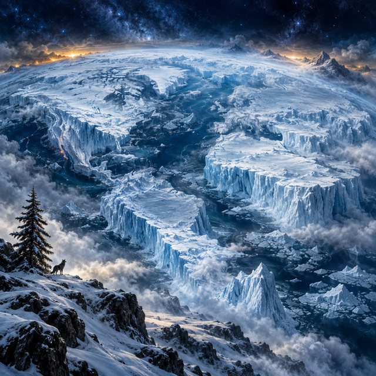
Great cold
stateThe Pleistocene chill that made the planet's surface nearly uninhabitable and forced the Old Ones from their last land holdings into the deep forever.
From Lovecraft: At the Mountains of Madness: full entry

Heaven
realmThe highest realm above the world, where the Most High holds his throne and through whose gates the cries of the dying enter to demand judgment.
Also in: Babylonian: Enuma Elish
From Ethiopian Enoch: The Watchers: full entry
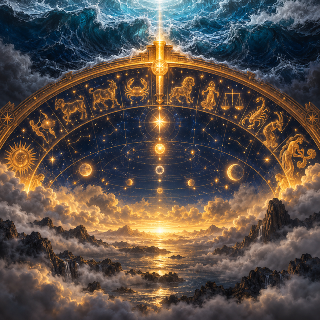
Heaven
realmThe upper half of Tiamat's split body, fixed as the dome of the world by Marduk, holding the fixed stars, the zodiac, and the stations of the gods.
Also in: Ethiopian Enoch: The Watchers
From Babylonian: Enuma Elish: full entry · watch the video
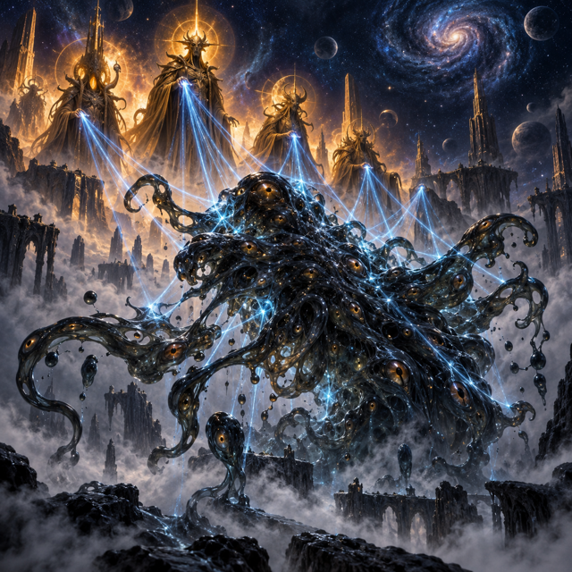
Hypnotic suggestion
powerThe Old Ones' directed mental power by which they controlled the Shoggoths and impressed temporary shapes on their plastic bodies.
From Lovecraft: At the Mountains of Madness: full entry
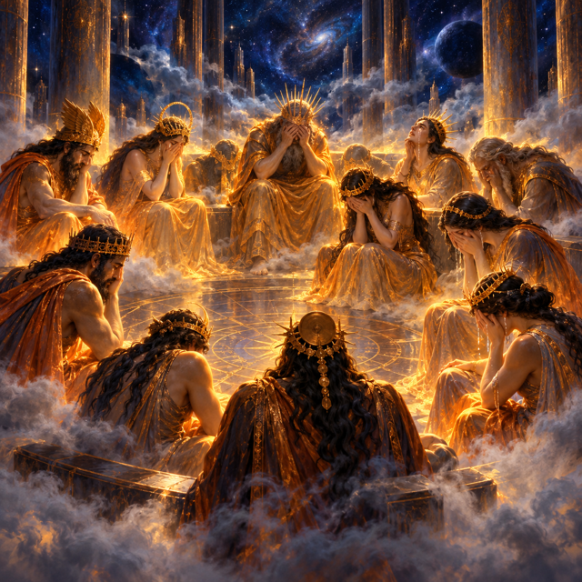
The Igigi
beingThe elder gods who wail bitterly and gather before Ansar when they hear that Tiamat has declared war, bewildered by what has changed.
From Babylonian: Enuma Elish: full entry · watch the video
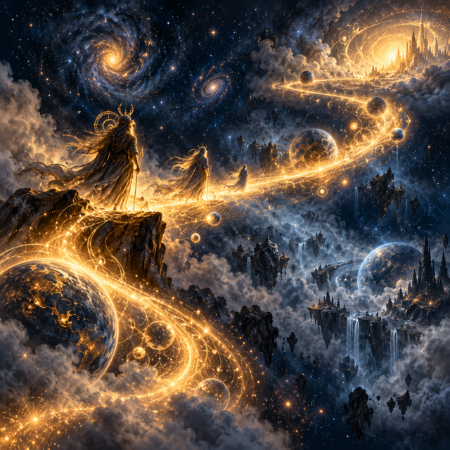
Interstellar travel
powerThe lost sacred art by which the Old Ones once transformed themselves to cross the interstellar void, making them independent of food, air, and heat.
From Lovecraft: At the Mountains of Madness: full entry

Kib
beingThe god who sent life into the worlds, making beasts first and then men out of beasts.
From Dunsany: The Gods of Pegana: full entry · watch the video
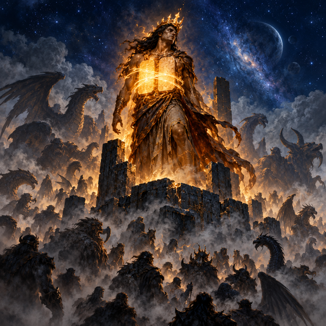
Kingu
beingThe champion raised by Tiamat as her spouse and war-leader, given the Tablets of Destiny on his breast to make his command unalterable, until conquered and stripped of them by Marduk.
From Babylonian: Enuma Elish: full entry · watch the video
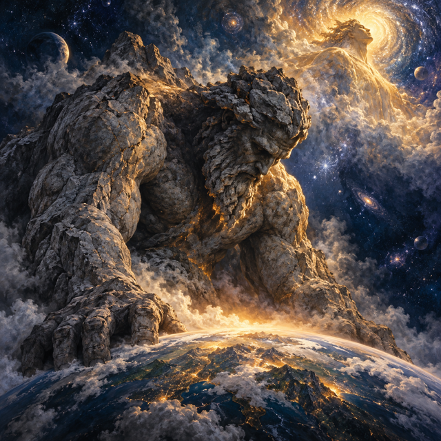
Kisar
beingThe paired companion of Ansar in the second divine generation, the earthward counterpart of the heavenly couple.
From Babylonian: Enuma Elish: full entry · watch the video
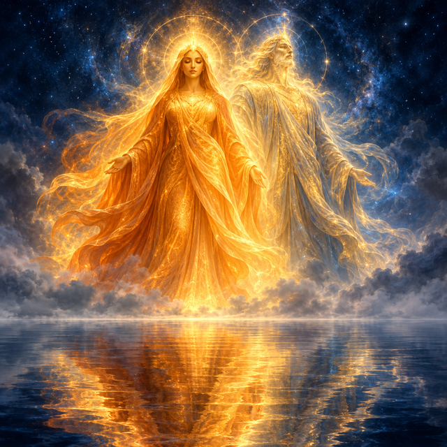
Lahamu
beingThe first goddess called into being alongside Lahmu, elder divine ancestress and his eternal counterpart.
From Babylonian: Enuma Elish: full entry · watch the video
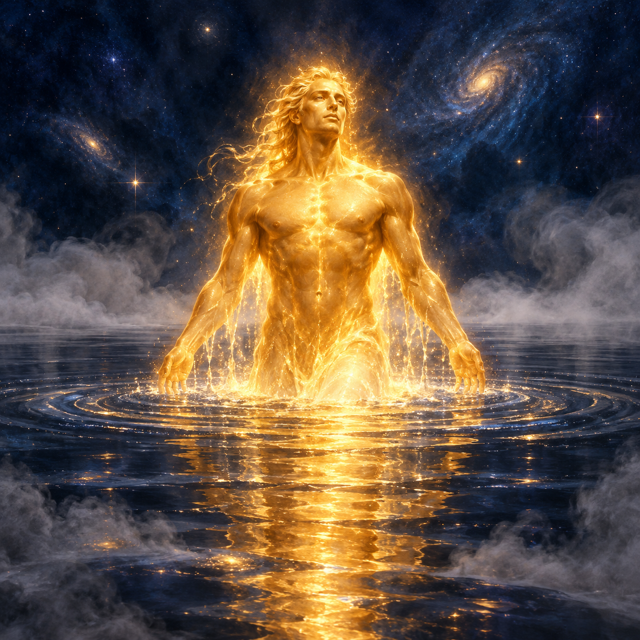
Lahmu
beingThe first god called into being from the mingled primordial waters, eldest divine ancestor of all the gods.
From Babylonian: Enuma Elish: full entry · watch the video

The Last
stateThe final moment when MANA-YOOD-SUSHAI wakes, laughs, destroys the gods and all their worlds, and nothing remains.
From Dunsany: The Gods of Pegana: full entry · watch the video
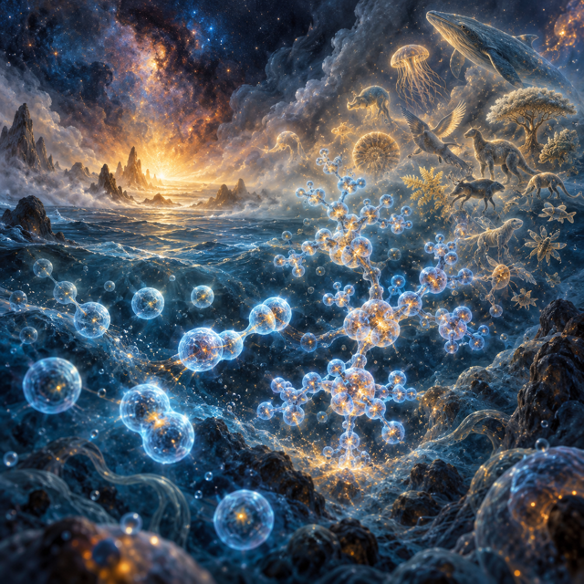
Life cells
objectInorganic matter shaped by the Old Ones into the first living material, which drifted beyond their notice and became all earthly life.
From Lovecraft: At the Mountains of Madness: full entry
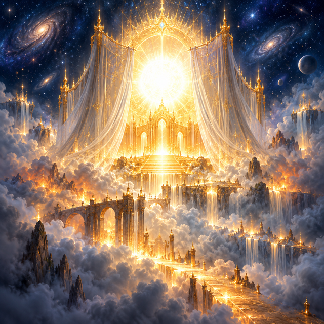
Light of lights
beingThe supreme divine power dwelling in the highest realm, to whom Sophia cries out for rescue from the darkness.
From Gnostic: Pistis Sophia: full entry · watch the video

Lion-faced Power
powerA false light-creature shaped from Self-willed's own dark matter and planted in chaos as a lure to devour Sophia's divine light.
From Gnostic: Pistis Sophia: full entry · watch the video

Man
beingMade by Kib out of beasts, man wonders and seeks the Secret but is kept from it by the Veil and taken in time by Mung.
From Dunsany: The Gods of Pegana: full entry · watch the video

MANA-YOOD-SUSHAI
beingThe supreme being who made all the gods and will remain alone when all else ends.
From Dunsany: The Gods of Pegana: full entry · watch the video
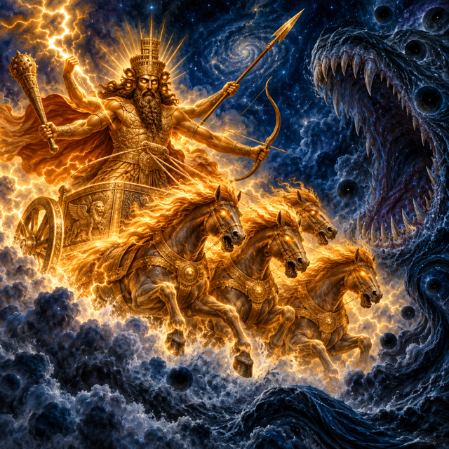
Marduk
beingThe chiefest among the great gods, son of Ea, who defeats Tiamat in single combat, splits her body to make heaven, and shapes the ordered world.
From Babylonian: Enuma Elish: full entry · watch the video
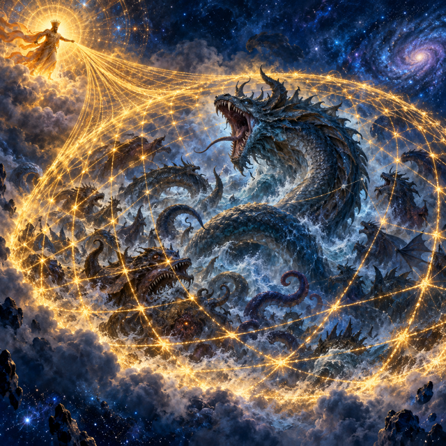
Marduk's Net
objectThe great net made by Marduk to enclose Tiamat and her monster army so that none could escape, spread at the decisive moment of battle.
From Babylonian: Enuma Elish: full entry · watch the video
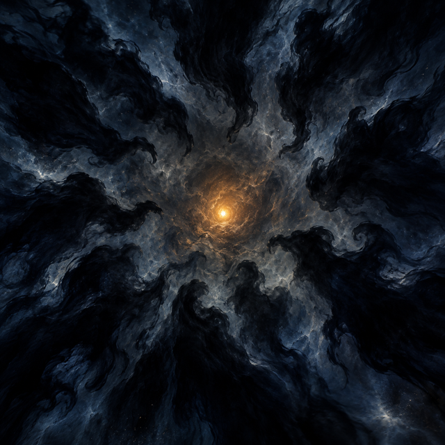
Material Emanations
powerA host of violent dark spirits sent by Self-willed to encircle and press Sophia until every trace of her light is stripped away.
From Gnostic: Pistis Sophia: full entry · watch the video
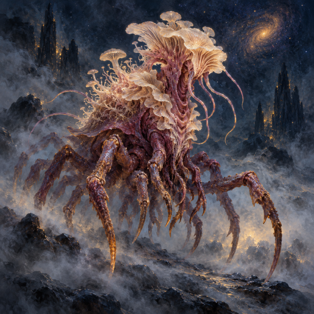
Mi-Go
beingHalf-fungous, half-crustacean alien invaders from the Jurassic who drove the Old Ones out of every northern land and sealed them to the south.
From Lovecraft: At the Mountains of Madness: full entry

Middle of Time
stateThe point where the gods were set after being made, with as much time before as behind, without beginning or end.
From Dunsany: The Gods of Pegana: full entry · watch the video
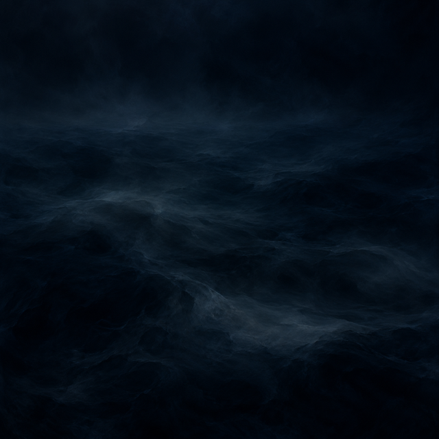
The Mingled Waters
stateThe state before all existence, when heaven and earth had no name and the waters of Apsu and Tiamat were not yet separated, no god called into being, no destiny ordained.
From Babylonian: Enuma Elish: full entry · watch the video

The Moon
beingThe Watcher made by the gods, face wrinkled with mountains and worn with valleys, observing all things in silence.
From Dunsany: The Gods of Pegana: full entry · watch the video
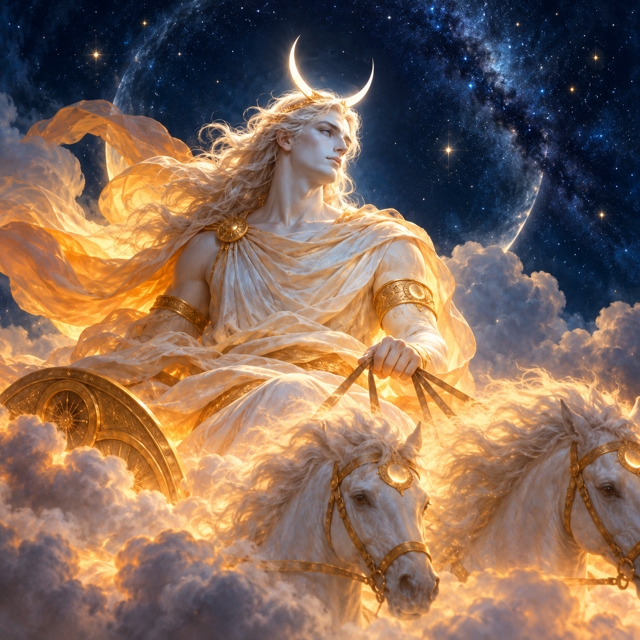
Moon-god
beingThe divine being appointed by Marduk to rule the night, determine the days by monthly phases, and stand opposite the sun at the full moon.
From Babylonian: Enuma Elish: full entry · watch the video

The Most High
beingThe Holy and Great One who rules from heaven, receives the cry of the dying, and commands the archangels to judge the guilty and heal the earth.
From Ethiopian Enoch: The Watchers: full entry

Mung
beingThe Lord of all Deaths who follows life wherever it goes and cannot be outrun.
From Dunsany: The Gods of Pegana: full entry · watch the video

Mutual imprecations
powerThe sworn curse by which all two hundred Watchers bound themselves together at Mount Hermon, sharing guilt equally so none could abandon the rest.
From Ethiopian Enoch: The Watchers: full entry
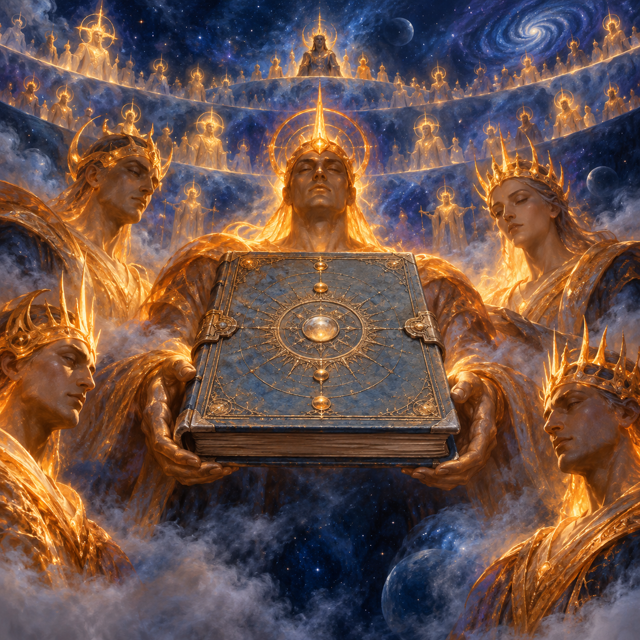
Mystery of the Rulers
objectThe sacred rite performed by the rulers of the æons that Sophia abandons when the higher light consumes her longing, triggering their hatred.
From Gnostic: Pistis Sophia: full entry · watch the video
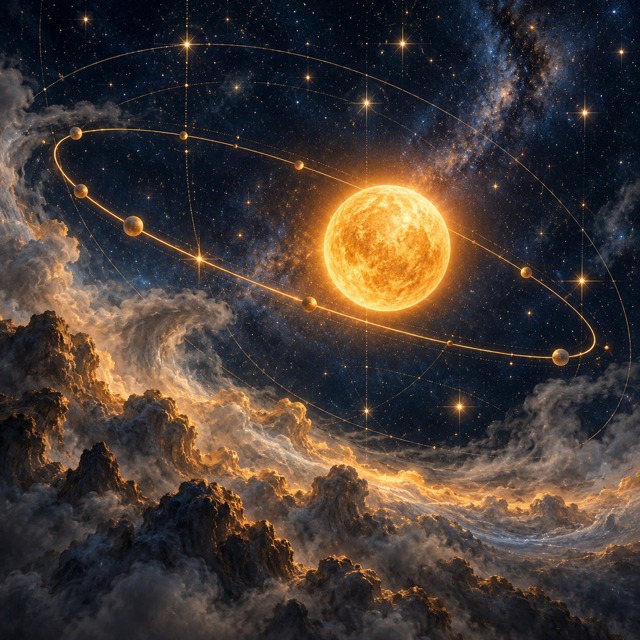
Nibir
objectThe planet Jupiter, whose station Marduk founds in the heavens to determine the bounds of all stellar stations so that none err or go astray.
From Babylonian: Enuma Elish: full entry · watch the video
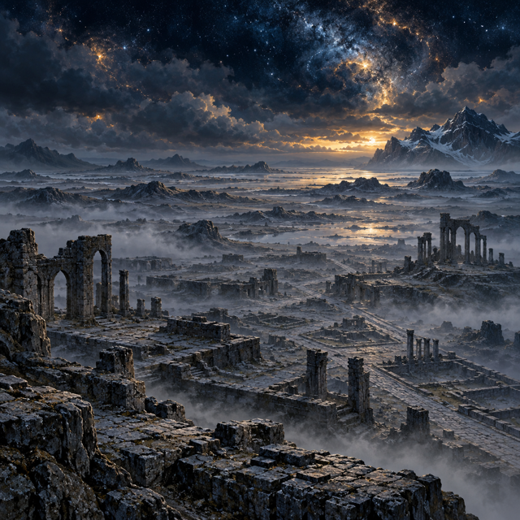
Northern lands
realmAll land areas north of the Antarctic that the Old Ones colonized as continents rose and drifted, then lost entirely to the Mi-Go.
From Lovecraft: At the Mountains of Madness: full entry
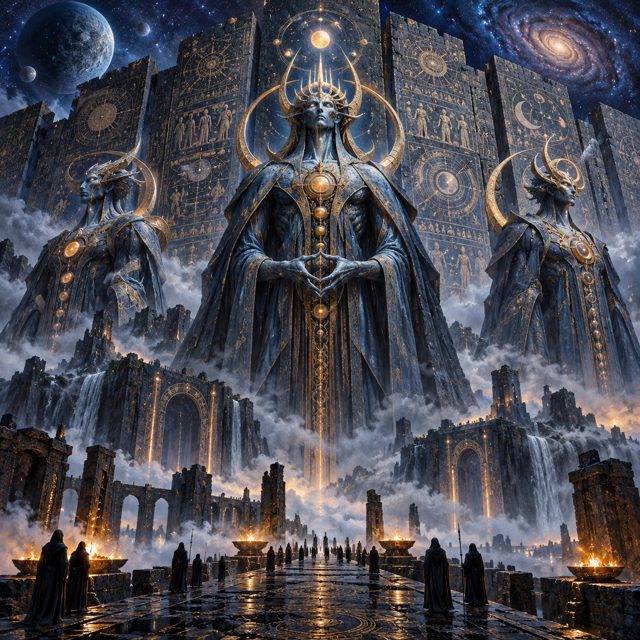
Old Ones
beingThe first intelligent beings to reach Earth, who crossed the stars, built vast stone cities across every land and sea, and created all earthly life.
From Lovecraft: At the Mountains of Madness: full entry

Pegana
realmThe realm above all others, home of MANA and the gods, where silence is sacred law.
From Dunsany: The Gods of Pegana: full entry · watch the video

Pistis Sophia
beingA divine woman who falls from her heavenly home by chasing a false light into the depths of chaos.
From Gnostic: Pistis Sophia: full entry · watch the video
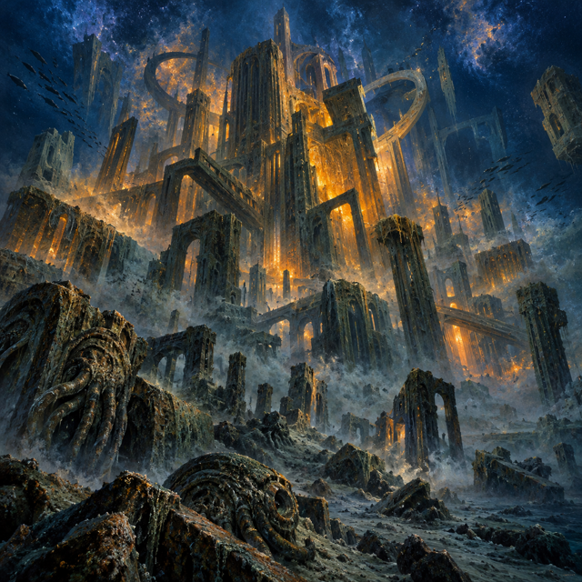
R'lyeh
realmThe Cthulhu spawn's stone city raised on new Pacific lands to an alien geometry, then swallowed whole when those lands sank back into the sea.
From Lovecraft: At the Mountains of Madness: full entry

Rough and jagged rocks
objectThe rough, sharp stones heaped over Azazel in his pit in Dudael by Raphael, covering his face in permanent darkness until the fire of final judgment.
From Ethiopian Enoch: The Watchers: full entry
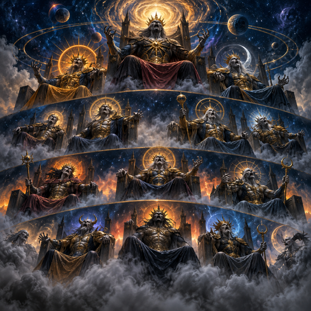
Rulers of the Æons
beingThe kings who rule the twelve realms below the thirteenth æon and rage at Sophia for ceasing their sacred rites.
From Gnostic: Pistis Sophia: full entry · watch the video
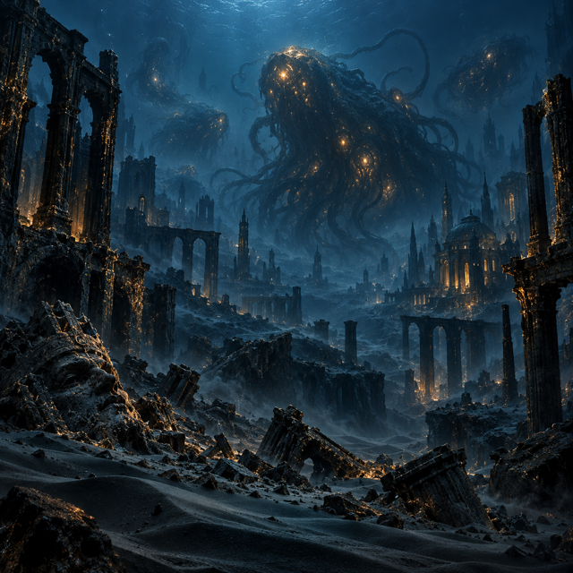
Sea bottom
realmThe ocean floors across the whole globe where the Old Ones built their first cities and Shoggoths served them as laboring beasts in the permanent dark.
From Lovecraft: At the Mountains of Madness: full entry

Secret of the Gods
stateThe hidden truth of why the gods were made and who made them, guarded from man at all cost.
From Dunsany: The Gods of Pegana: full entry · watch the video
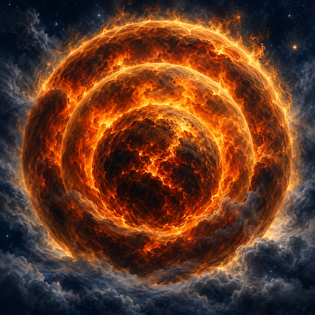
Self-willed
beingThe powerful, disobedient triple-force in the thirteenth æon who plots Sophia's ruin in order to seize her light and rule all realms below.
From Gnostic: Pistis Sophia: full entry · watch the video
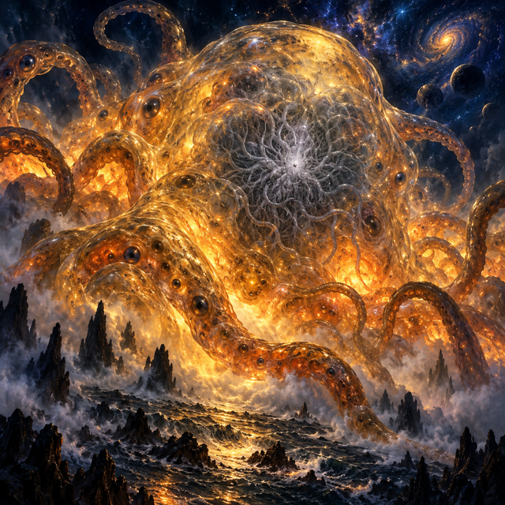
Semi-stable brain
stateThe rudimentary mind that Shoggoths slowly accumulated through endless cycles of fission, which let them echo and eventually resist the will of their masters.
From Lovecraft: At the Mountains of Madness: full entry
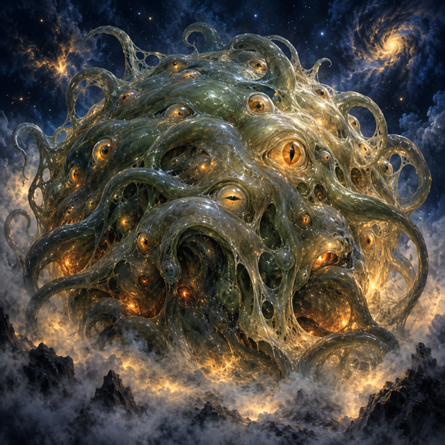
Shoggoths
beingShapeless masses of living jelly made by the Old Ones to serve as beasts of burden in the sea, which over vast ages grew dangerously intelligent.
From Lovecraft: At the Mountains of Madness: full entry

Silence of Pegana
stateThe sacred hush that holds while MANA sleeps, kept by gods who speak only with their hands.
From Dunsany: The Gods of Pegana: full entry · watch the video

Sish
beingThe Destroyer of Hours whose passage leaves everything behind him withered and old.
From Dunsany: The Gods of Pegana: full entry · watch the video

Skarl
beingThe tireless drummer who beats his drum without ceasing so that MANA-YOOD-SUSHAI will not wake.
From Dunsany: The Gods of Pegana: full entry · watch the video

Skarl's Drum
objectThe drum whose unending beat is the hidden source of all existence, its echoes becoming worlds and suns.
From Dunsany: The Gods of Pegana: full entry · watch the video

The Small Gods
beingThe gods made by MANA-YOOD-SUSHAI who play with worlds and life while their maker sleeps.
From Dunsany: The Gods of Pegana: full entry · watch the video

Son of Lamech
beingThe righteous son of Lamech whom Uriel warned to hide himself and preserve his seed before the coming flood destroys all life on earth.
From Ethiopian Enoch: The Watchers: full entry
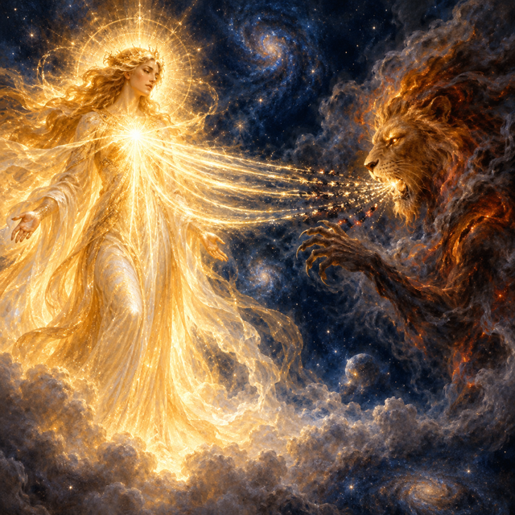
Sophia's Light-powers
powerThe divine light-forces Sophia carries within her that Self-willed's entire trap is designed to steal and devour.
From Gnostic: Pistis Sophia: full entry · watch the video
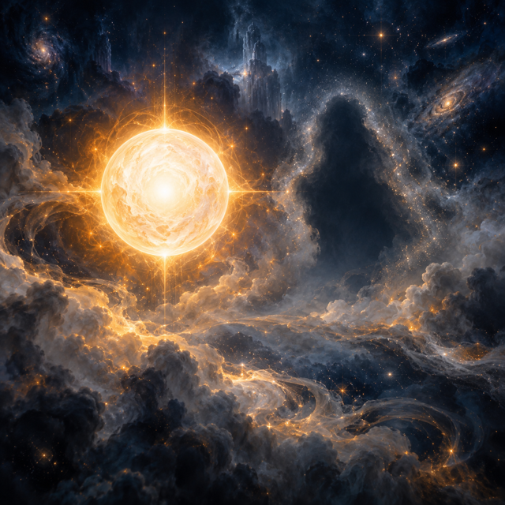
Sophia's Pair
beingThe divine partner Sophia was meant to move with but deliberately left behind when she chose to descend alone, whose absence breaks the sacred order.
From Gnostic: Pistis Sophia: full entry · watch the video
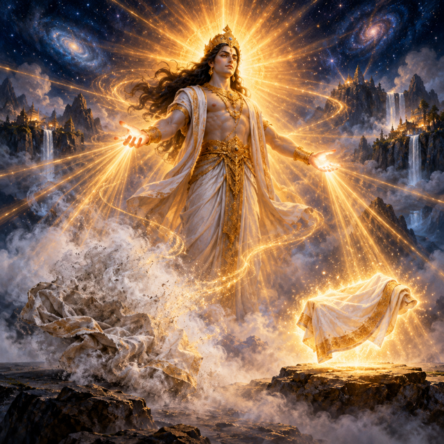
Sovereignty over All
stateThe supreme and irresistible authority decreed by the assembled gods as the price for Marduk fighting Tiamat, making his word equal to Anu's and his command over the whole world absolute.
From Babylonian: Enuma Elish: full entry · watch the video
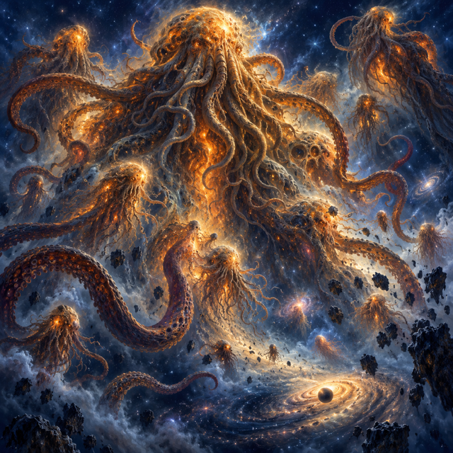
Spawn of Cthulhu
beingOctopus-shaped beings from cosmic infinity who invaded the Pacific, built the city R'lyeh, and drove the Old Ones back to the sea in monstrous war.
From Lovecraft: At the Mountains of Madness: full entry

Star of the Abiding
beingThe Resting One set in the North by the gods, fixed and still, signaling to man that somewhere among the worlds is rest.
From Dunsany: The Gods of Pegana: full entry · watch the video
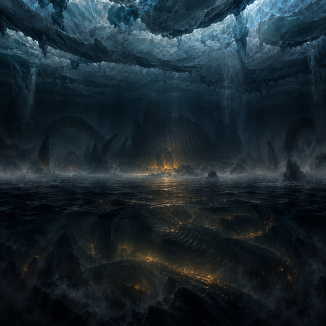
Subterranean ocean
realmThe vast underground sea beneath Antarctic ice that became the final refuge of the Old Ones when the Pleistocene cold made even the polar surface unbearable.
From Lovecraft: At the Mountains of Madness: full entry
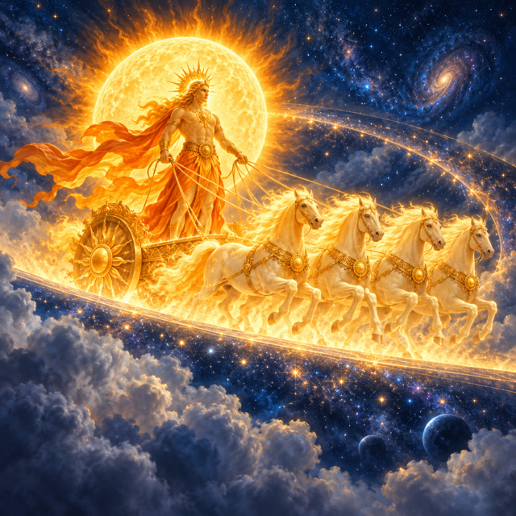
Sun-god
beingThe divine being whose fixed path runs across the foundation of heaven, the great light that the moon is directed to draw near to at the full.
From Babylonian: Enuma Elish: full entry · watch the video
Tablets of Destiny
objectThe sacred tablets worn on the bearer's breast that confer the authority to decree fate, carried first by Kingu at Tiamat's command and seized by Marduk in victory.
From Babylonian: Enuma Elish: full entry · watch the video

Thirteenth Æon
realmThe divine realm just below the highest heaven where Sophia and her twenty-four companions live until her fall.
From Gnostic: Pistis Sophia: full entry · watch the video
Tiamat
beingThe primeval salt-water chaos from which all gods were born, who assembled a monster army to avenge Apsu's death and was slain and split into heaven by Marduk.
From Babylonian: Enuma Elish: full entry · watch the video
Treasury of the Light
realmThe highest divine realm at the summit of all things, home of the supreme light, screened from below by a shimmering veil.
From Gnostic: Pistis Sophia: full entry · watch the video
Twelve Æons
realmThe twelve levels of the world between Sophia's home and chaos, each ruled by kings who hate her for abandoning their rites.
From Gnostic: Pistis Sophia: full entry · watch the video

Valleys of the earth
realmThe underground valleys deep beneath the surface where the Watcher Semjaza and his associates are bound fast for seventy generations before their final judgment.
From Ethiopian Enoch: The Watchers: full entry

The Veil
objectWhat the gods set between man and his ignorance so he cannot find the Secret.
From Dunsany: The Gods of Pegana: full entry · watch the video

The Void Beyond the Worlds
realmThe darkness past all worlds where Skarl walks alone when his work is done and nothing remains.
From Dunsany: The Gods of Pegana: full entry · watch the video

The Worlds
realmThe realms made by the gods to amuse themselves, wheeling spheres holding suns between Pegana and Earth.
From Dunsany: The Gods of Pegana: full entry · watch the video

Yaldabaōth
beingThe lion-faced ruler of chaos, born from Sophia's stripped and lightless matter after her light is devoured, one half fire and one half darkness.
From Gnostic: Pistis Sophia: full entry · watch the video